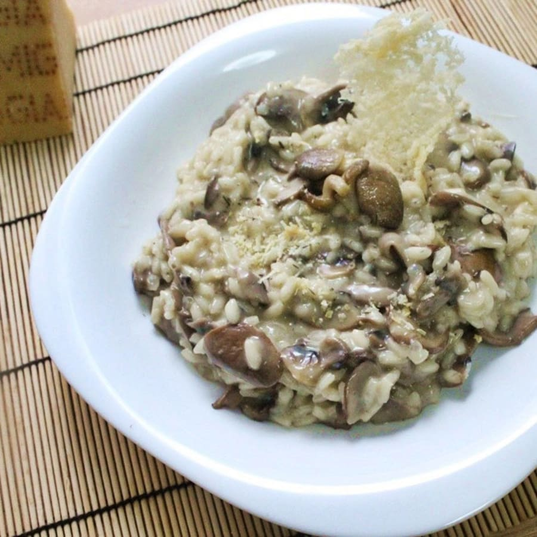

Risotto de Champiñones
Un risotto cremoso con el sabor de los champiñones.
Ingredientes
- 300 g de arroz arborio
- 200 g de champiñones
- 1 cebolla
- 1 litro de caldo de verduras
- 100 ml de vino blanco
- 50 g de queso parmesano
- Mantequilla
- Aceite de oliva
- Sal y pimienta

Instrucciones
- Sofríe cebolla y champiñones.
- Añade el arroz y rehoga.
- Incorpora el vino blanco y deja evaporar.
- Agrega caldo poco a poco y remueve.
- Termina con parmesano y mantequilla.
Consejos
- Remueve constantemente para lograr la cremosidad.
¡Un plato italiano lleno de sabor!